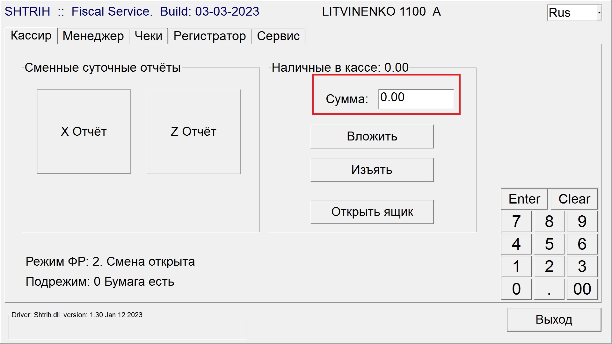

Обязательно по той же карте. Ни в коем случае мы не делаем возврат на другую карту, даже если обе карты принадлежат одному и тому же гостю. Возврат осуществляется только на ту карту, с которой была произведена оплата.
Возврат наличными:
Payment → Payment Code: CASH → Amount с минусом → Reference: Refund → Post
(!) Если в кассе кроме размена нет средств, сначала необходимо сделать внесение в HRS FiscalService.
Вводим необходимую сумму и нажимаем “Вложить”, вышедший чек оставляем в кассе и сдаем в конверте в конце смены.
В этом случае, после возврата, копим средства в кассе, когда наберется необходимая сумма, снова вводим ее и нажимаем Изъять. Вышедший чек также сохраняем и скидываем в конверт.
Если за смену необходимая сумма не накопилась, передаем это по смене.